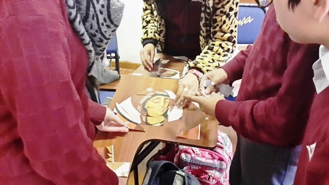
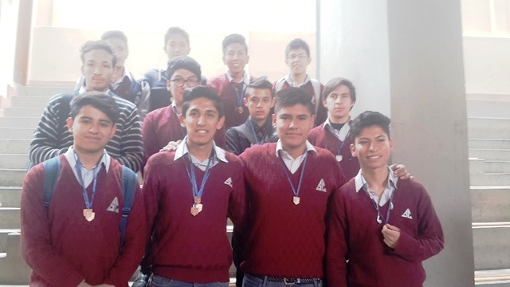
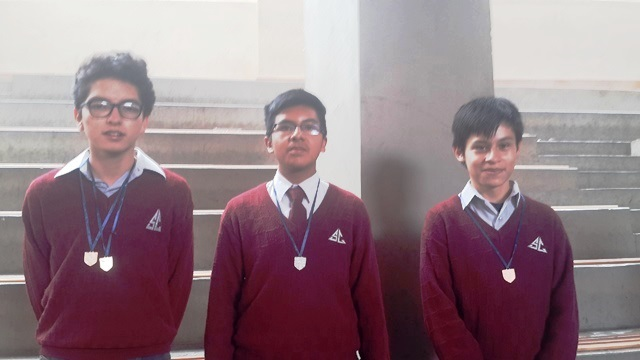
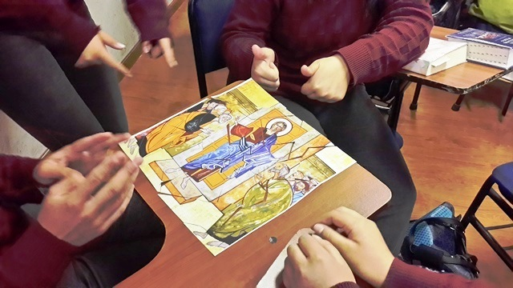
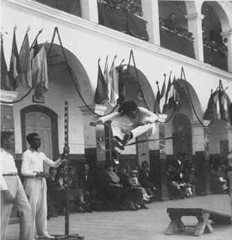

La persona Sucrense, va a manifestar unos rasgos típicos que también se deben encontrar en los jesuitas, pero que no se agota de ninguna manera en ellos. Estos rasgos son: Ser compañer@, sentirse apasionad@ por la misión, buscar la mayor gloria de Dios, tener una experiencia de oración muy concreta, caminar superando etapas y vivir en espíritu de discernimiento.
Visión.:Somos una Institución Educativa, que contribuye en la formación de agentes de cambio capaces, conscientes, comprometidos y compasivos en la tarea de la reconciliación del hombre con Dios, entre sí y con la naturaleza |
 |  |
|  |  | |
Misión.:Colaborar con la tarea evangelizadora de la Iglesia, formando integralmente hombres y mujeres con excelencia humana, a través de procesos educativos de calidad a la luz de valores cristianos y la espiritualidad ignaciana en la búsqueda de construir una sociedad justa y solidaria. |
||
Historia.: |
|
Unidad Educativa MARISCAL ANTONIO JOSE DE SUCRE (Centenario y Patrimonial), en la presente gestión cumplimos 134 años al servicio de la Educación del Estado Boliviano. En el mes de Julio de 1882 se fundó el Colegio dándole el nombre de MARISCAL ANTONIO JOSE DE SUCRE como una forma de reconocimiento a libertador Mcal Antonio Jose de Sucre. El 1ro. de Agosto de 1882 empezó a funcionar el colegio con algo mas de 40 alumnos. |  |
Cabe resaltar que de las aulas del colegio San Calixto salieron muchos presidentes, senadores, diputados y embajadores, hombres y mujeres al servicio del país, siempre llevando consigo el lema En todo amar y servir que lo inculcó San Ignacio de Loyola. Por la labor que desempeñamos, la Institución fue reconocida con la máxima condecoración del Cóndor de los Andes otorgada por el Estado el año 1982 al celebrarse el centenario de la fundación del Colegio, también fue reconocida con la Condecoración Bicentenario por el Gobierno Municipal de la ciudad de La Paz, por ser una de las Instituciones representativas de nuestra ciudad. Actualmente la Dirección General está a cargo del Lic. Enrique Gobilard Suárez y el colegio cuenta con más de 2000 alumnos, 10 directivos. 61 docentes, 13 administrativos y personal de servicio. |
|